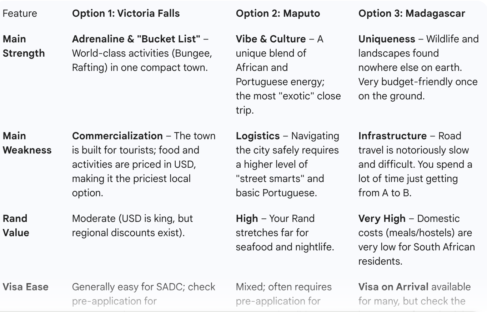

Introduction: Next semester, I will be studying abroad in Cape Town, South Africa and I am deciding where to go for my Spring Break March 28th-April 7th. I want to ask Gemini 2.0 Flash to plan an ideal, budget-friendly spring break for me with a full itinerary.
I will be using this structured prompt in order to get the best itinerary:
To get a truly high-quality travel plan from an LLM, you need to provide more than just your location and budget. You need to give it “constraints” and “preferences” so it doesn’t suggest things that are too expensive or logistically a nightmare.
Since you are in Rosebank, you have easy access to the airport via the Southern Line or a R150-R200 Uber, which is a great starting point.
The “Cape Town Student Excursion” Super Prompt Context: I am a university student currently studying abroad in Rosebank, Cape Town. I am looking to take a 3–5 day trip during an upcoming break. I am looking for a “value-for-money” experience—I prefer social hostels or unique Airbnbs over luxury hotels, and I’d rather spend my money on activities and food than a fancy room.
Logistics & Budget:
Departure: Cape Town International (CPT).
Flight Time: Strictly 2–4 hours (no long layovers).
Total Budget: Approximately R6,000 – R10,000 (roughly $330 - $550 USD) for everything, including flights.
Transport: Please suggest how to get from Rosebank to CPT cheaply (e.g., MyCiTi or Uber/Bolt times).
Please propose 3 distinct travel options:
Option 1: The ‘Adrenaline & Nature’ Trip (e.g., Garden Route/Gqeberha)
Why this fits a student budget.
A 3-day itinerary focused on outdoor adventure.
Specific flight route (e.g., FlySafair to PLZ/Gqeberha or GRJ/George).
Option 2: The ‘Big City & History’ Trip (e.g., Johannesburg)
Focus on the arts and nightlife scene (Maboneng, Melville, or Braamfontein).
Suggest safe ways for a student to navigate the city.
Mention 2 museums or cultural sites that offer student discounts.
Option 3: The ‘Regional International’ Wildcard (e.g., Windhoek, Namibia or Victoria Falls)
Address the “hidden costs” (visas for [Insert Your Nationality] and currency exchange).
A high-level breakdown of how to see the main sights without booking a R5000 private tour.
For each option, please include:
Budget Breakdown: Expected cost for Flights, Accommodation, and Daily Spending.
Foodie Tip: One “must-eat” local dish or market.
The ‘Local Hack’: A tip to save money or stay safe that tourists usually miss.

Below is Gemini’s Response:
Option 1: The ‘Adrenaline & Nature’ Trip (Victoria Falls, Zimbabwe) Why it fits: It is one of the “Seven Natural Wonders of the World” and surprisingly accessible on a student budget if you avoid the luxury lodges.
Flights: Direct from CPT to VFA (Victoria Falls) via Airlink or FlySafair (if on special) can be pricey, but if you fly to Bulawayo or Livingstone and take a shuttle, it’s much cheaper.
The Itinerary:
Day 1: Explore the Falls (National Park entry is cheaper for SADC residents—bring your student card and passport/permit).
Day 2: Sunset cruise on the Zambezi (look for “booze cruise” hostels; they are much cheaper than the “luxury” versions).
Day 3: White-water rafting or the “Flight of Angels” (helicopter) if you have the budget left.
Budget Breakdown:
Flights: R4,500 – R5,500 (Return).
Accommodation: R1,000 (3 nights at Shoestrings Backpackers—legendary social vibe).
Spending: R3,500 (Food, park fees, one big activity).
Total: ~R9,000 – R10,000.
Foodie Tip: Eat at the Lookout Cafe for the view, but grab dinner at the Boma Dinner & Drum Show for a wild (but touristy) local feast.
The Local Hack: Use US Dollars in small denominations ($1, $5). While the Rand is sometimes accepted, the exchange rate given on the street is usually terrible.
Option 2: The ‘Big City & History’ Trip (Maputo, Mozambique) Why it fits: It feels like a slice of Europe in Africa. The Portuguese influence, seafood, and nightlife are world-class but priced for a local economy.
Flights: Fly CPT → MPM (Maputo) via LAM or Airlink.
The Itinerary:
Day 1: Walking tour of the Baixa (Old Town). Visit the Iron House and the Central Market.
Day 2: Ferry to Catembe for a lunch of prawns on the beach looking back at the city skyline.
Day 3: Take a “Chapa” (local minibus) to Macaneta Beach for a day of sun and surfing.
Budget Breakdown:
Flights: R3,500 – R4,500 (Return).
Accommodation: R1,200 (3 nights at The Base Backpackers).
Spending: R2,500 (Seafood is cheap, local beer “2M” is very affordable).
Total: ~R7,200 – R8,200.
Foodie Tip: Pão (Portuguese rolls) fresh from a street bakery in the morning, and Piri-Piri Chicken for dinner.
The Local Hack: Maputo is very safe during the day, but use M-Pesa or local currency (Meticais) for small purchases. The Rand is rarely accepted at a good rate here compared to the border towns.
Option 3: The ‘Regional International’ Wildcard (Antananarivo, Madagascar) Why it fits: It is a “biodiversity hotspot” where your Rand goes incredibly far. It feels like nowhere else on earth.
Flights: Look for Airlink specials from JNB (you’d need to get a cheap FlySafair to JNB first).
The Itinerary:
Day 1-2: Explore “Tana” (Antananarivo). Visit the Rova of Antananarivo (royal palace) and the local markets.
Day 3-4: Take a “Taxi-Brousse” (long-distance minibus) to Andasibe-Mantadia National Park to see the Indri lemurs.
Budget Breakdown:
Flights: R5,500 – R6,500 (This will be your biggest cost).
Accommodation: R1,000 (Hostels and local guest houses are very cheap).
Spending: R2,000 (Eating out is roughly 50% cheaper than in Cape Town).
Total: ~R8,500 – R9,500.
Foodie Tip: Try Romazava, the national dish (a meat and leafy green stew).
The Local Hack: Visa on Arrival: As a South African (or resident), you can get a visa on arrival at the airport for a small fee (approx. R500-R700). Always have the exact cash in Euros or USD for this.
**Reflection: I love the ideas of Victoria Falls, Maputo and Madagascar! I think Gemini did a good job at weighing the costs and benefits of each when I prompted it displayed this table. I also think Gemini did a great job of geolocating options as Maputo relatively close (although Madagascar is far and very expensive). I also think the LLM failed to account for just how expensive Cape Town—> Madagascar flights are $890 USD). Gemini estimated 5,500 rand which is about $327 USD and there is a vast underestimate. I am a bit sur;
